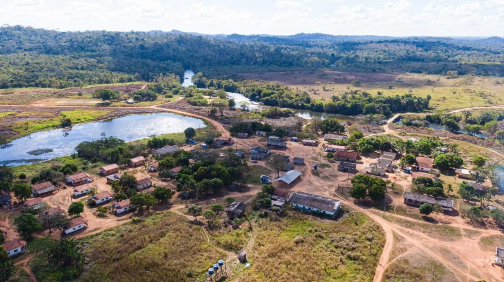
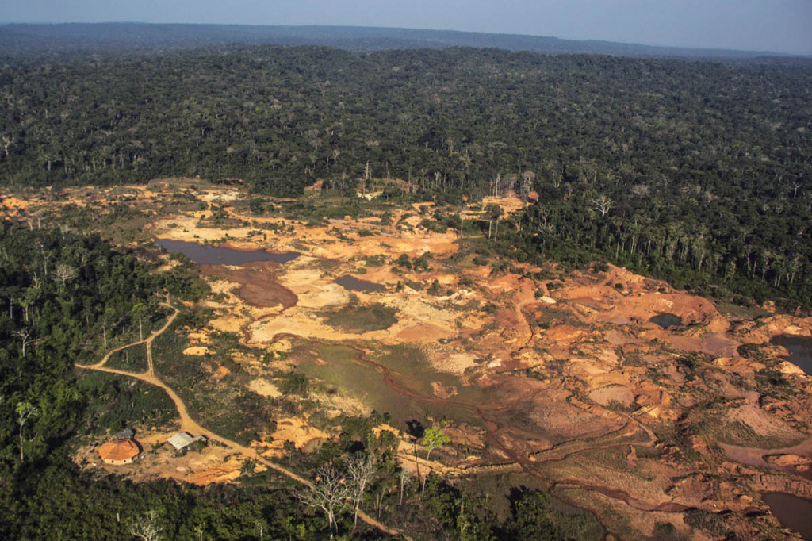

Le Brésil ouvre la voie à l'exploitation minière en terres indigènes
Le 3 février, à la demande de l'association indigène Cinta Larga (Patjamaaj), la Cour suprême brésilienne a autorisé pour la première fois la possibilité d'explorer et d'exploiter des minerais au sein d'un territoire indigène. Bien que cette décision n'autorise pas automatiquement l'exploitation, elle impose au Congrès un délai de deux ans pour légiférer sur la question et fixe des règles provisoires.
Le dilemme économique des Cinta Larga
La réserve indigène Roosevelt, vaste de 2,7 millions d'hectares dans le sud-ouest de l'Amazonie, abriterait certains des plus grands gisements de diamants au monde. L'absence de régulation a empêché les communautés de bénéficier économiquement de ces ressources, laissant le champ libre à l'exploitation illégale. Ce vide juridique a entraîné la contamination des rivières, la déforestation et de violents conflits.

« La motivation principale était de rechercher l'autonomie économique et de meilleures conditions de vie pour la communauté. L'exploration peut générer des revenus, des infrastructures et l'accès à la santé. »
— Gilmar Cinta Larga

Des règles provisoires strictes
Dans l'attente d'une loi, la Cour a établi des conditions drastiques si l'exploitation devait être validée. L'activité minière serait limitée à seulement 1 % du territoire. De plus, elle nécessiterait des études d'impact, l'approbation du Congrès et une consultation préalable des communautés affectées, conformément à la Convention 169 de l'OIT. Une partie des bénéfices devrait également être partagée avec les communautés pour des projets d'intérêt collectif.
Un dangereux précédent écologique ?
Malgré ces garde-fous, la décision suscite de vives inquiétudes. Le ministère brésilien des Peuples indigènes (MPI) a averti que la présence de peuples en isolement volontaire dans la région rend cette activity susceptible d'entraîner de graves violations des droits humains. De son côté, l'Instituto Socioambiental (ISA) craint que cela n'accélère la pression sur le Congrès et n'ouvre la porte à de multiples demandes d'exploration.
Les experts rappellent enfin que les inspections environnementales sur le terrain sont rares au Brésil. Il est fréquent que des opérations minières clandestines utilisent des permis légaux pour blanchir des minerais extraits illégalement dans des zones protégées.